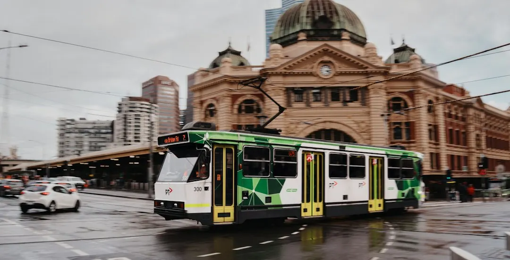

For homeowners comparing ev charger installation melbourne options, the practical decision comes down to parking position, electrical capacity, charger compatibility and the paperwork that follows the work.
Ev Charger Installation Melbourne Explained
The first useful detail is where the vehicle normally sits. The published guidance from Ev Charger Installation Melbourne asks for the suburb, property type, parking location and charger details if known. These details show whether the unit belongs in a garage, carport or open driveway, and how far the cable may need to run from the switchboard.
Cable distance and wall type can change the work involved. A charger near the switchboard may need a simpler route than one at the far end of a garage or on an external wall. Ask each electrician to identify the proposed mounting spot, cable path and protection so quotes describe the same work.
Melbourne homes range from older weatherboard and brick properties to newer estates. The switchboard should be assessed before the charger is selected, especially where the board has not previously supported vehicle charging.
Match the charger to the car and supply
Charger choice should follow the vehicle and the available electrical supply. A universal Type 2 unit may suit a broad range of vehicles, while a Tesla Wall Connector is a specific option for a Tesla owner. If the charger has already been bought, keep its model name available for the assessment.
Three phase equipment can deliver 11 to 22kW, but the car's onboard charger may not use the full output. Ask what charging speed the vehicle can accept and whether the home's supply can support the proposed unit before paying for a higher capacity option.
Solar and battery systems add another question. A solar aware charger may use surplus daytime generation, while the published guide also discusses cheaper tariff windows. The installer should review the existing panels, inverter and battery arrangement before describing how charging will operate.
- Confirm the vehicle connection and onboard charging limit.
- Identify whether the supply appears single phase or three phase.
- Disclose rooftop solar, a battery or an existing charger.
Allow for switchboard work and Victorian paperwork
A dedicated circuit is central to a typical home installation, but the switchboard determines what preparation is needed. An assessment may lead to an upgrade, load management or added protection. Ask whether the quoted work assumes the existing board is ready or includes conditional electrical work.
In Victoria, the electrician or Registered Electrical Contractor completing the work must issue a Certificate of Electrical Safety and provide a copy. Ask when it will be supplied and keep it with the property records. The published guidance also refers to AS/NZS 3000 wiring rules covering protection, cabling and installation methods.
For an older home, request separate pricing for the charger and possible board work. For a newer home, ask whether the supply and existing board are suitable for the proposed circuit.
For the single cross property reference, see this Melbourne home charging installation guide.
Apartments, townhouses and shared parking
Shared parking can involve owners corporation approval, metering and load sharing. Those questions should be raised before a final design is prepared, particularly where the charger is supplied from infrastructure serving more than one dwelling.
Confirm who controls the parking space, where the meter or switchboard is located and whether the charger can be separately measured. A quote should state how shared infrastructure, access and approval dependencies are treated. Renters should confirm the owner's position before arranging electrical work.
Open driveways create a separate mounting and cable routing question from enclosed garages. The site assessment should identify where the unit will sit and how the cable reaches the vehicle.
Compare quotes and decide the next action
Record the charger model, parking location, cable route, switchboard condition and whether solar or a battery is present. If one quote assumes the board is ready and another includes upgrade work, their totals describe different jobs.
Before booking, confirm the charger, mounting position, circuit arrangement, conditional switchboard items and Certificate of Electrical Safety. If the supply type or board condition is unclear, mark it for assessment rather than guessing.
This guide applies to Melbourne homeowners, EV buyers with a vehicle on order, landlords, renters seeking approval and apartment or townhouse residents. The next action is a site specific quote based on the property, vehicle and proposed charging position.
- Map the parking spot. Note whether the vehicle sits in a garage, carport or open driveway and estimate its distance from the switchboard.
- Check the electrical setup. Record whether the supply appears single phase or three phase and note any solar, battery or older switchboard equipment.
- Identify the charger. Select a universal Type 2 unit, Tesla Wall Connector or solar aware option, or keep the existing model name ready.
- Request a detailed quote. Provide the suburb, property type, parking location and charger information, then ask for cable, switchboard and certification details.
| Property situation | Main question | Quote detail to confirm |
|---|---|---|
| Older detached home | Can the switchboard carry the charging load? | Upgrade, load management or protection assumptions |
| Newer estate home | Is a dedicated circuit practical? | Supply type, charger compatibility and cable route |
| Apartment or townhouse | Who approves and measures the work? | Owners corporation, metering and load sharing |
| Solar or battery home | How will charging work with existing equipment? | Inverter, battery, generation and tariff settings |
This guide covers home charger selection, electrical preparation, shared parking questions, quote comparison and Victorian completion paperwork.